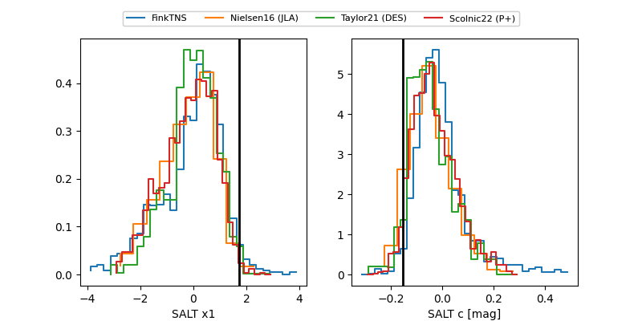

FINK: ZTF25abommyh
Lasair: ZTF25abommyh
ALeRCE: ZTF25abommyh
TNS: 2025wvi
YSE: 2025wvi
ZTF25abommyh (ztf,fink)
2025wvi (tns,yse)
equatorial (ra, dec) = (287.8820,+30.77780)
galactic (l, b) = (62.7097,+9.57795)

last atlasc=19.12, atlaso=19.00, ztfg=18.75, ztfr=18.90
6 atlasc, 3 atlaso, 6 ztfg, 1 ztfr detections